Mosaics
SYDE 671 · Assignment 3 · James Xie
B.3 / MATCH
THE FEATURES.
A close neighbor is a candidate. A distinctive neighbor is a better candidate.
01 / Connect similar local descriptions.
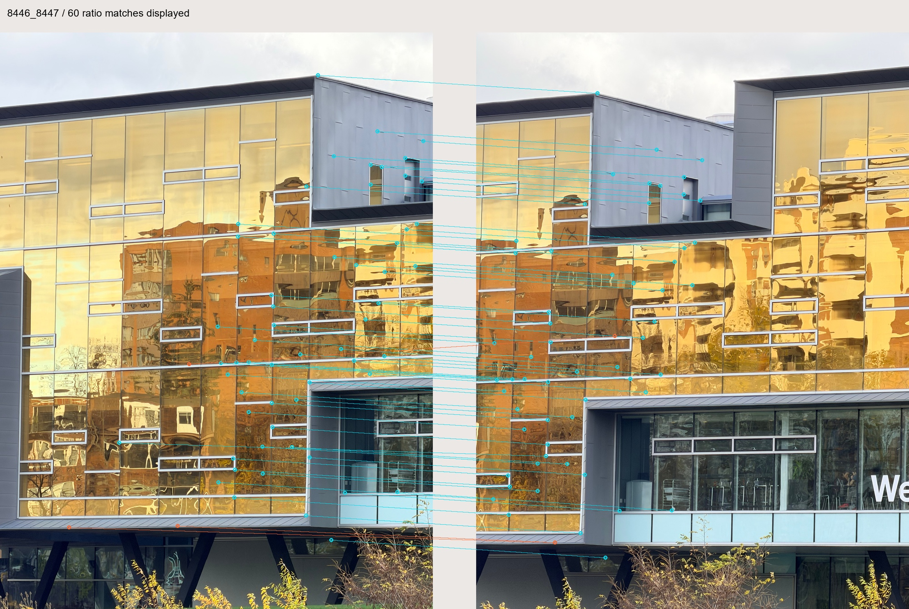
Seven photographs form six adjacent pairs: 8443 → 8444 → 8445 → 8446 → 8447 → 8448 → 8450. Each image has 500 valid descriptors. Match forward between neighbors; reverse nearest neighbors supply the mutual flag.
02 / Two neighbors, one ratio.
For each valid source, sum 64 squared component differences to each valid target, then take the square root. Exact search uses blocks of 64 queries, without a built-in matcher.
The ratio compares the best candidate with its nearest competitor, following section 5 and figure 6b of Brown, Szeliski & Winder (2005). The Euclidean threshold 0.7 is our implementation choice.
The paper plots squared error ratios. Our Euclidean threshold 0.7 equals 0.49 for squared distances. Both ratios are saved; their thresholds are not interchangeable.
Invalid rows are excluded; distance ties use ascending B.2 row. Zero second distance rejects 0/0, while a unique zero first distance can pass. At least two valid targets are required; the threshold is strict.
03 / Mutual is a flag, not geometry.
A match is mutual if the target returns to the same nearest source. Reverse search uses all valid sources, without a reverse ratio test.
All forward ratio passes are retained. Of 552 accepted query pairs, 501 are also mutual nearest. Mutuality is a separate flag. Ratio matches can be many-to-one, and mutual matches can still be wrong.
No geometry or manual labels filter these matches. A.2 data is hash-checked only; B.4 verifies geometry.
04 / Six pairs, one fixed main threshold.
| Pair | Ratio < 0.6 | Main < 0.7 | Ratio < 0.8 | Main + mutual |
|---|---|---|---|---|
| 8443 → 8444 | 33 | 47 | 76 | 47 |
| 8444 → 8445 | 40 | 61 | 104 | 49 |
| 8445 → 8446 | 42 | 74 | 109 | 67 |
| 8446 → 8447 | 157 | 176 | 214 | 166 |
| 8447 → 8448 | 86 | 114 | 160 | 107 |
| 8448 → 8450 | 58 | 80 | 120 | 65 |
Counts measure acceptance, not correctness or RANSAC inliers. All pairs use 0.7; 0.6 and 0.8 show threshold sensitivity.
Overviews show up to 60 ratio-ranked matches, not hand-picked correct ones. Full figures and all 500 query records are linked. Repetition, viewpoint changes and reflections can still cause errors.
8443 → 8444 · 500 valid descriptors per image
47 ratio matches.
47 also mutual.
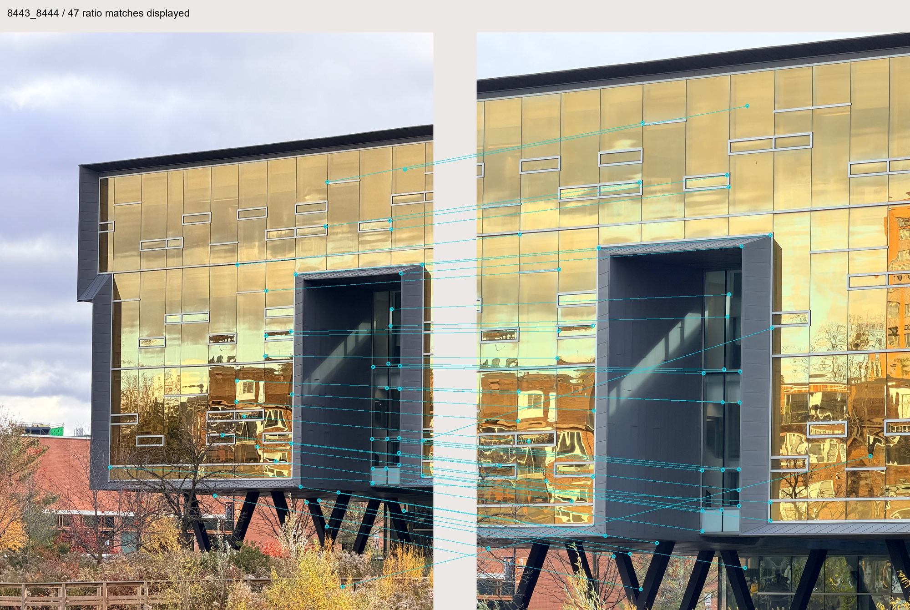
The 47 source-query matches point to 47 distinct target rows. Many-to-one matches are retained; mutuality is flagged separately.
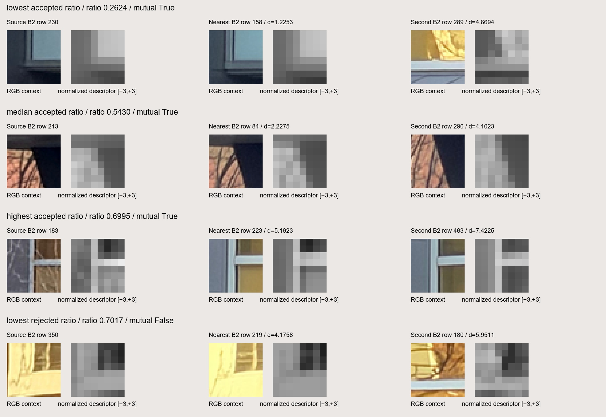
Ratio-ranked examples: lowest accepted ratio: source row 230; median accepted ratio: source row 213; highest accepted ratio: source row 183; lowest rejected ratio: source row 350. A low ratio indicates a distinctive match, but does not guarantee geometric correctness. Rejected near-threshold matches may still look plausible.
All query arrays and accepted correspondences (NPZ) · All 500 query audit records (JSON) · All accepted match lines · Source working image · Target working image


8444 → 8445 · 500 valid descriptors per image
61 ratio matches.
49 also mutual.
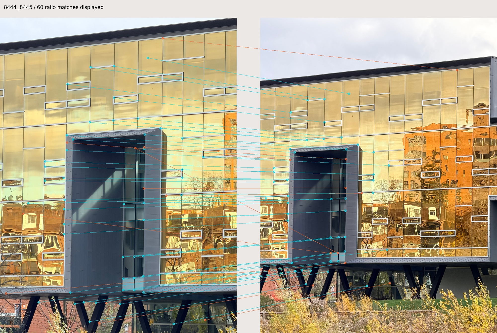
The 61 source-query matches point to 55 distinct target rows. Many-to-one matches are retained; mutuality is flagged separately.
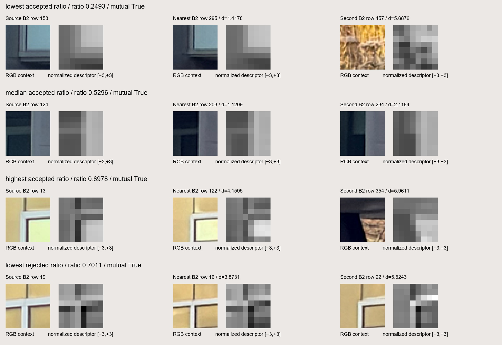
Ratio-ranked examples: lowest accepted ratio: source row 158; median accepted ratio: source row 124; highest accepted ratio: source row 13; lowest rejected ratio: source row 19. A low ratio indicates a distinctive match, but does not guarantee geometric correctness. Rejected near-threshold matches may still look plausible.
All query arrays and accepted correspondences (NPZ) · All 500 query audit records (JSON) · All accepted match lines · Source working image · Target working image


8445 → 8446 · 500 valid descriptors per image
74 ratio matches.
67 also mutual.
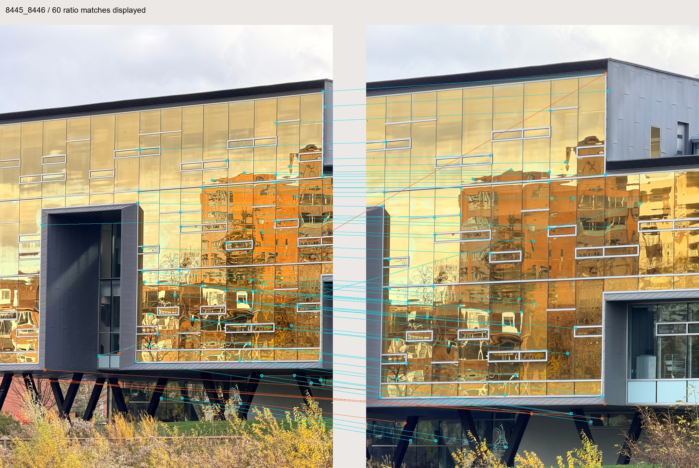
The 74 source-query matches point to 68 distinct target rows. Many-to-one matches are retained; mutuality is flagged separately.
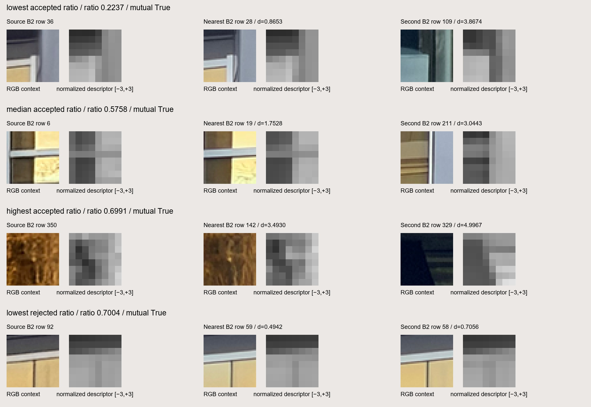
Ratio-ranked examples: lowest accepted ratio: source row 36; median accepted ratio: source row 6; highest accepted ratio: source row 350; lowest rejected ratio: source row 92. A low ratio indicates a distinctive match, but does not guarantee geometric correctness. Rejected near-threshold matches may still look plausible.
All query arrays and accepted correspondences (NPZ) · All 500 query audit records (JSON) · All accepted match lines · Source working image · Target working image


8446 → 8447 · 500 valid descriptors per image
176 ratio matches.
166 also mutual.
The 176 source-query matches point to 168 distinct target rows. Many-to-one matches are retained; mutuality is flagged separately.
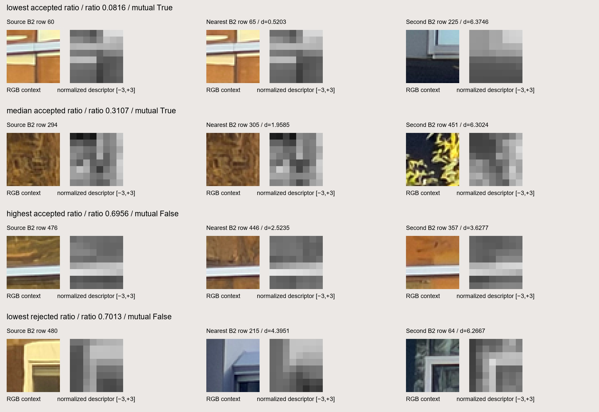
Ratio-ranked examples: lowest accepted ratio: source row 60; median accepted ratio: source row 294; highest accepted ratio: source row 476; lowest rejected ratio: source row 480. A low ratio indicates a distinctive match, but does not guarantee geometric correctness. Rejected near-threshold matches may still look plausible.
All query arrays and accepted correspondences (NPZ) · All 500 query audit records (JSON) · All accepted match lines · Source working image · Target working image


8447 → 8448 · 500 valid descriptors per image
114 ratio matches.
107 also mutual.
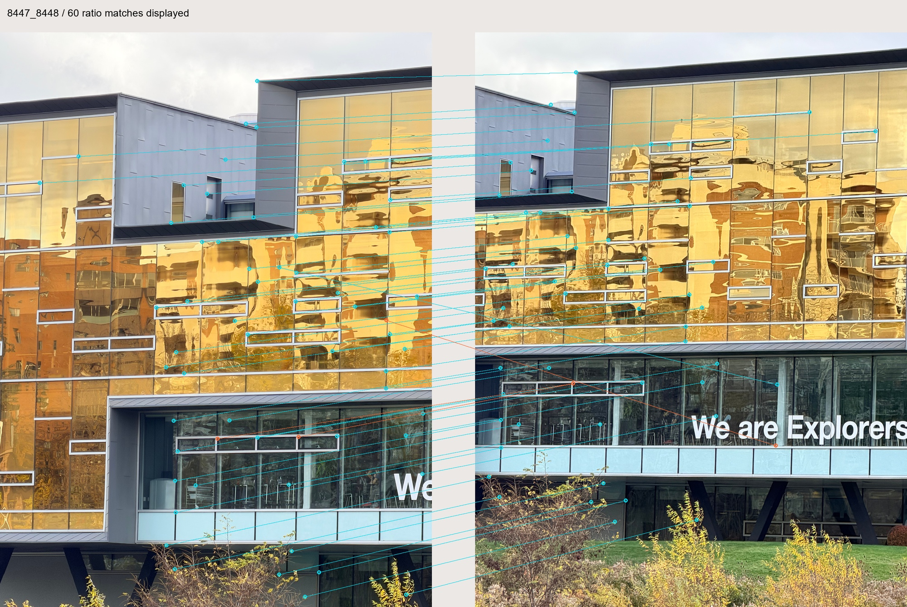
The 114 source-query matches point to 109 distinct target rows. Many-to-one matches are retained; mutuality is flagged separately.
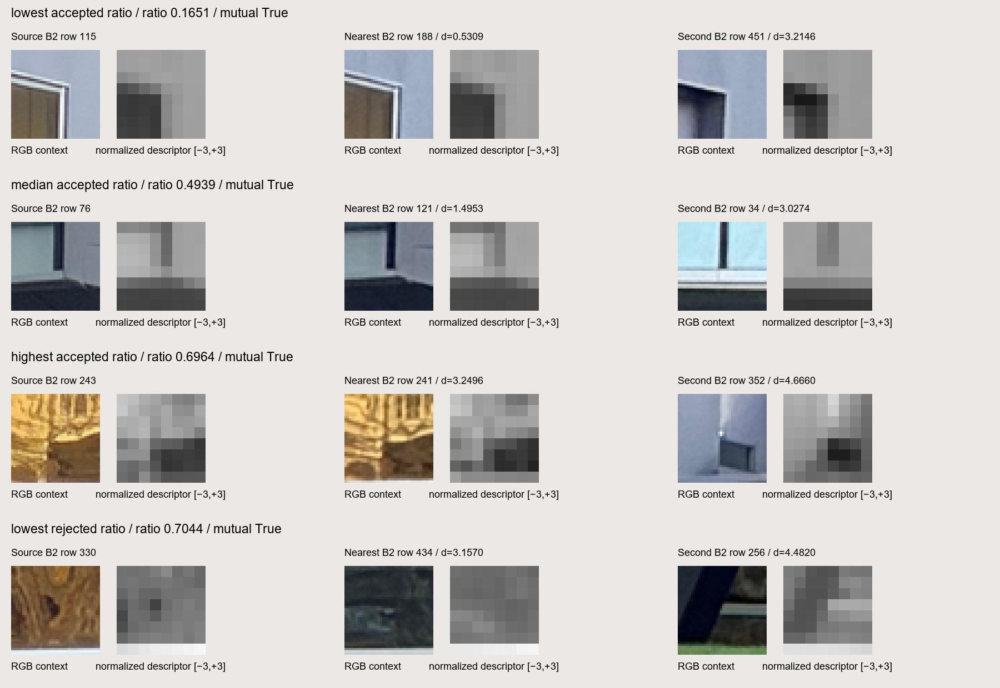
Ratio-ranked examples: lowest accepted ratio: source row 115; median accepted ratio: source row 76; highest accepted ratio: source row 243; lowest rejected ratio: source row 330. A low ratio indicates a distinctive match, but does not guarantee geometric correctness. Rejected near-threshold matches may still look plausible.
All query arrays and accepted correspondences (NPZ) · All 500 query audit records (JSON) · All accepted match lines · Source working image · Target working image


8448 → 8450 · 500 valid descriptors per image
80 ratio matches.
65 also mutual.
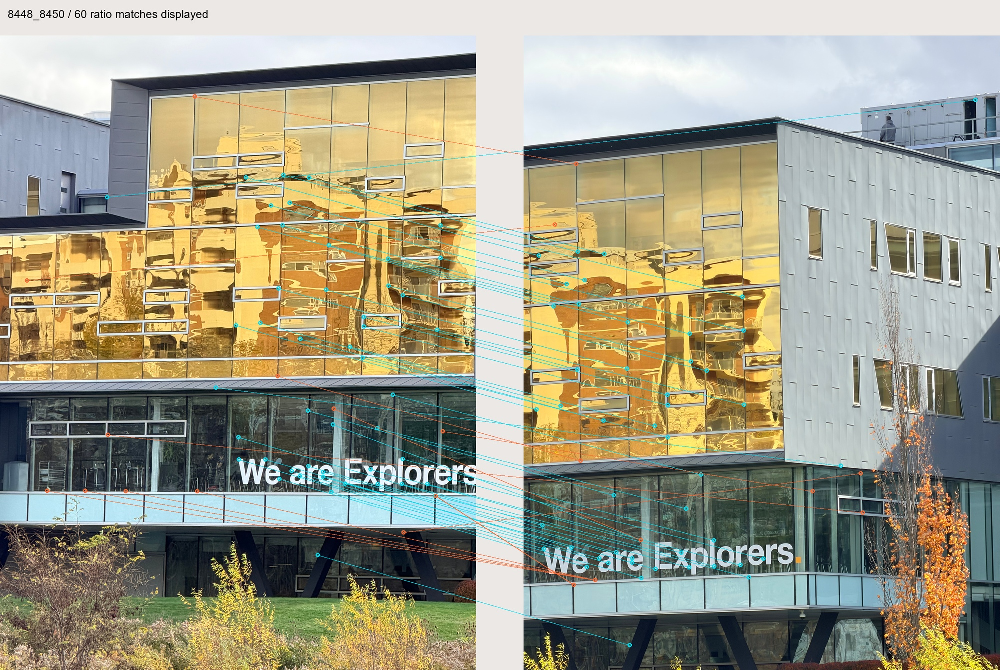
The 80 source-query matches point to 69 distinct target rows. Many-to-one matches are retained; mutuality is flagged separately.
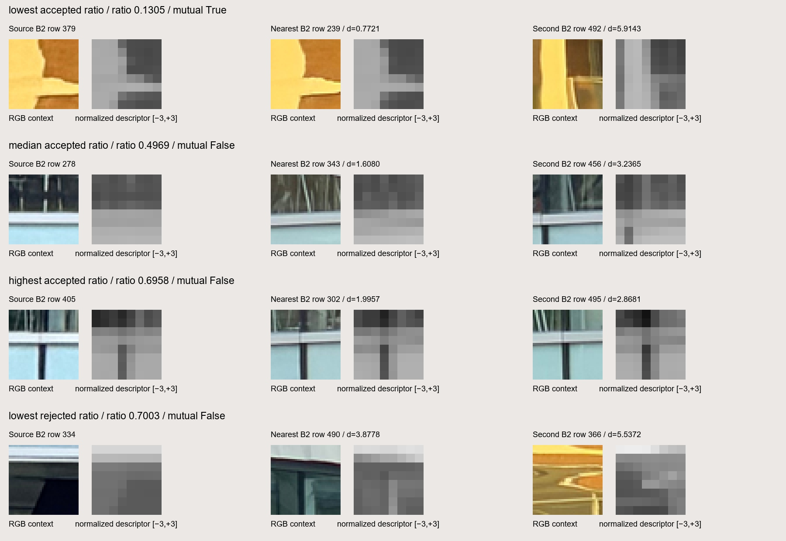
Ratio-ranked examples: lowest accepted ratio: source row 379; median accepted ratio: source row 278; highest accepted ratio: source row 405; lowest rejected ratio: source row 334. A low ratio indicates a distinctive match, but does not guarantee geometric correctness. Rejected near-threshold matches may still look plausible.
All query arrays and accepted correspondences (NPZ) · All 500 query audit records (JSON) · All accepted match lines · Source working image · Target working image


05 / Auditable rows for robust geometry.
Query records retain IDs, coordinates, both neighbors, distances, ratios and flags. JSON uses null for unavailable values; NPZ uses NaN and −1 for missing values and indices.
NPZ also saves accepted IDs, candidate indices and coordinates in source-row order. Mutual flags join by source row. B.4 uses these records for geometry.
Measurements and input hashes record settings, counts and displayed rows. Upstream inputs are unchanged.
Reproduce & inspect.
python run_matching.py python build_report.py python -m unittest test_matching -v
Run from B3 using the existing NumPy/Pillow environment. No dependency was added.
Exact neighbors, ratio test and mutual flag · Six-pair experiment · Seven analytical unit checks · Parameters, counts and provenance · B.2 descriptors
Checks cover known neighbors, ratios, ties, zero distances, row mapping and invalid inputs. Real checks recompute 20 queries per pair and verify ratios and hashes.
B.4 uses RANSAC and produces one automatic mosaic with seven images, above the minimum of three.